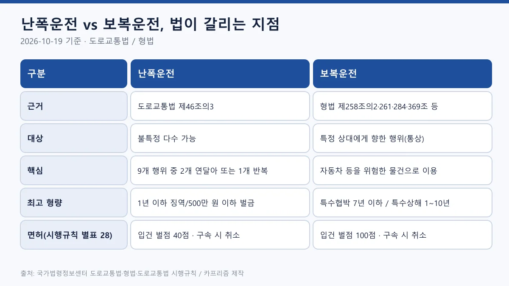
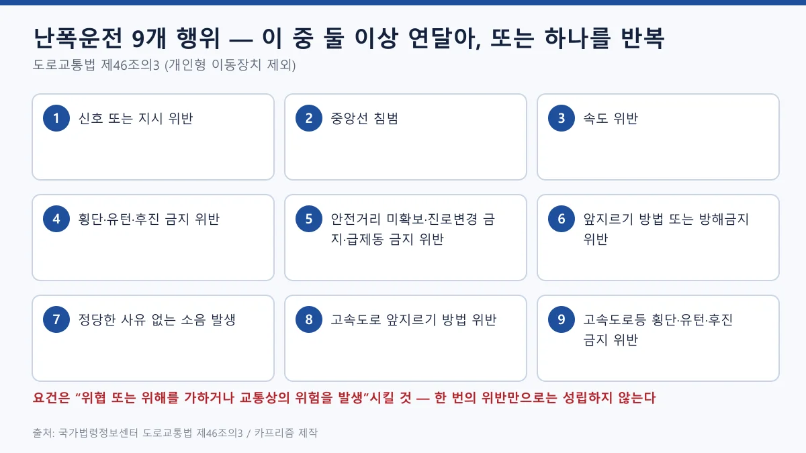
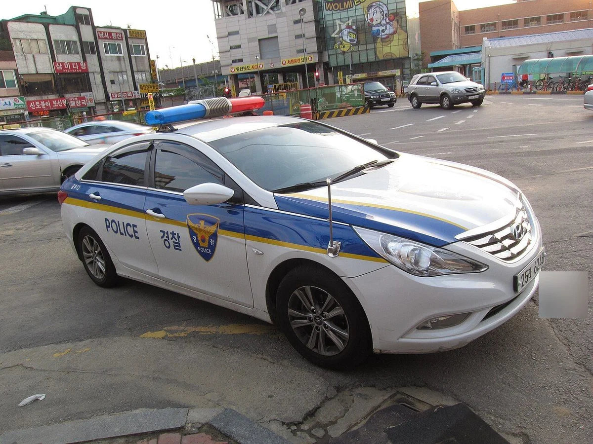
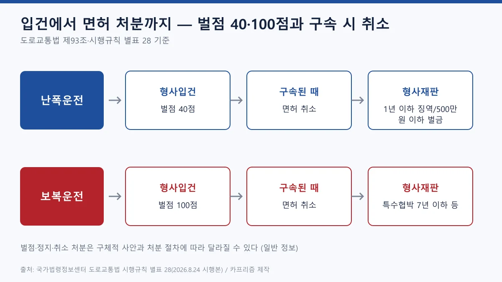
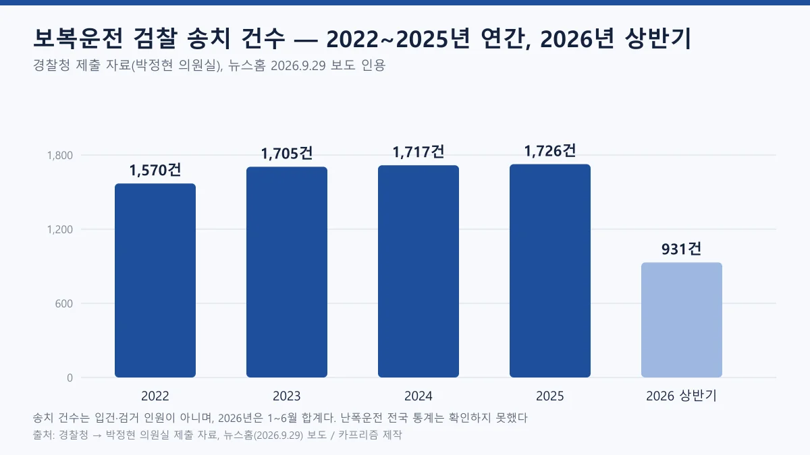
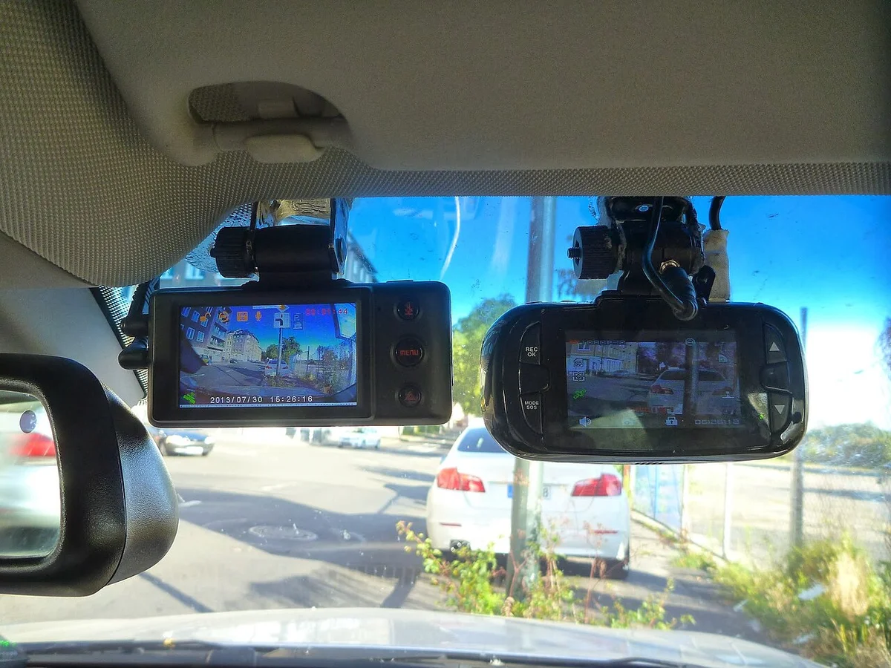
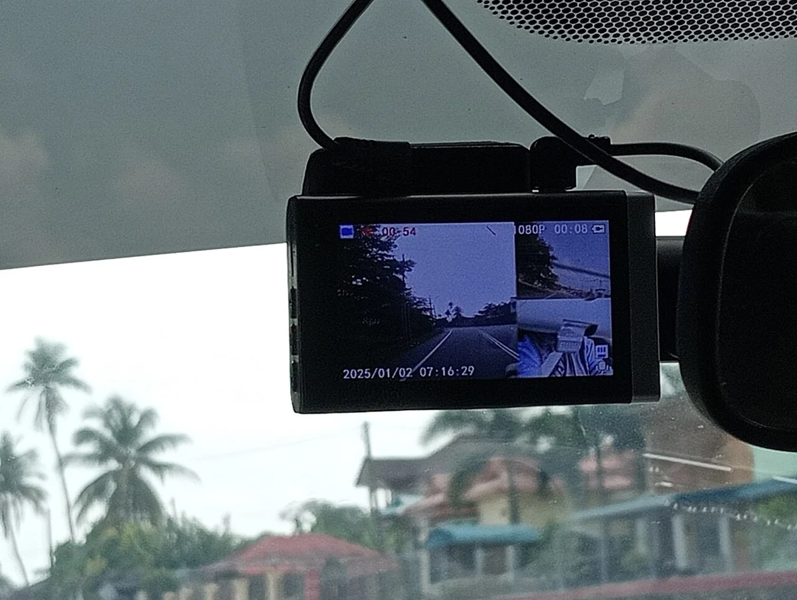
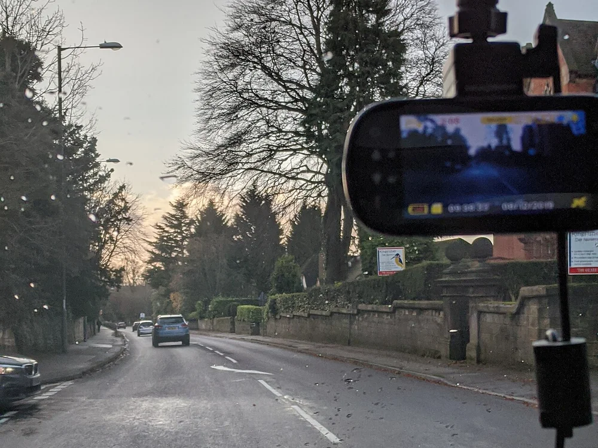
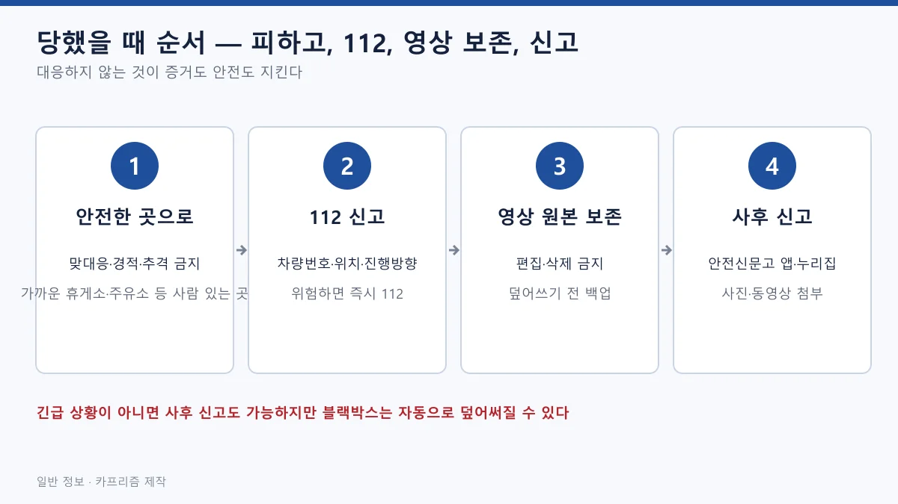

▲ 서울의 경찰차 예시. 특정 단속 장면이 아니며 행인은 식별되지 않는다 ⓒ ProjectManhattan / Wikimedia Commons (CC0)
"앞차가 갑자기 끼어들어 급브레이크를 밟았는데, 쫓아가서 따지면 나도 처벌되나요?" 도로 위에서 화가 날 때 난폭운전과 보복운전이 어떻게 다른지, 어디서부터 형사처벌이고 면허는 어떻게 되는지 정확히 아는 운전자는 많지 않다. 두 말이 뉴스에서 섞여 쓰이다 보니 같은 죄처럼 느껴지기 쉽다.
이 글은 국가법령정보센터의 현행 조문을 직접 열어 구성요건, 형량, 면허 처분, 신고 방법과 블랙박스 증거 요령, 피해자가 하지 말아야 할 대응을 정리한다. 법령 기준일은 2026년 10월 19일이다. 면허 벌점·정지·취소 일반 구조는 운전면허 벌점·정지·취소 기준 기사에서, 영상 제출 절차는 블랙박스 영상 경찰 제출 가이드에서 다뤘으므로 여기서는 두 죄의 차이에 집중한다.
이 글은 일반 정보이며 법률 자문이 아니다. 실제 사건의 성립 여부는 경찰·검찰·법원이 사안별로 판단하므로 구체적인 문제는 경찰서나 변호사 등 전문가와 확인해야 한다.
1. 한눈에 보기 — 난폭운전과 보복운전은 어디가 다른가
가장 큰 차이는 법적 뿌리다. 난폭운전은 도로교통법에 이름이 있는 죄이고, 보복운전은 형법 범죄를 자동차로 저지른 경우에 붙는 별칭이다. 그래서 같은 상황이라도 난폭운전으로만 처벌될 수도, 특수협박까지 함께 적용될 수도 있다. 어느 조항이 적용될지는 수사기관이 사안별로 판단한다.

▲ 난폭운전과 보복운전 비교(2026-10-19 기준) ⓒ 카프리즘 제작 도표 (국가법령정보센터 도로교통법·형법·시행규칙)
| 구분 | 난폭운전 | 보복운전 |
|---|---|---|
| 법적 근거 | 도로교통법 제46조의3, 벌칙 제151조의2 | 형법 제258조의2(특수상해)·제261조(특수폭행)·제284조(특수협박)·제369조(특수손괴) |
| 핵심 요건 | 법에 열거된 9개 행위 중 둘 이상 연달아, 또는 하나를 지속·반복하여 위협·위해·교통상 위험 발생 | 자동차 등을 이용한 위험한 행위로 상대에게 협박·폭행·상해·손괴를 가함 |
| 최고 형량 | 1년 이하 징역 또는 500만 원 이하 벌금 | 특수협박 7년 이하 징역 또는 1천만 원 이하 벌금, 특수상해 1년 이상 10년 이하 징역 |
| 면허(별표 28) | 구속 시 취소, 형사입건 시 벌점 | 구속 시 취소, 입건 시 벌점 100점 |
📍 이 글의 법령 기준일
- 도로교통법: 2026년 10월 13일 공포본(법률 제22067호)이 현행이다. 제46조의3과 제151조의2의 마지막 개정 표기는 2020년 6월 9일이다
- 형법: 법률 제22007호(2026년 9월 29일 공포), 2026년 10월 2일 시행본
- 특정범죄 가중처벌 등에 관한 법률: 2025년 7월 2일 시행본
- 도로교통법 시행규칙: 2026년 8월 24일 시행본(별표 28)
- 국가법령정보센터 DRF 조문 조회로 확인한 날은 2026년 10월 19일이다 도로교통법 바로가기
2. 난폭운전 — 9개 행위, 둘 이상 연달아 또는 하나를 반복
도로교통법 제46조의3은 자동차등(개인형 이동장치는 제외)의 운전자가 아래 9개 행위 중 둘 이상을 연달아 하거나, 하나를 지속 또는 반복하여 다른 사람에게 위협 또는 위해를 가하거나 교통상의 위험을 발생하게 하면 안 된다고 정한다. 신호 한 번 어겼다고 곧바로 난폭운전이 되는 것은 아니라는 뜻이다.

▲ 난폭운전 9개 행위(제46조의3) ⓒ 카프리즘 제작 도표 (도로교통법 제46조의3)
- ① 신호·지시 위반(제5조) ② 중앙선 침범(제13조 제3항) ③ 속도 위반(제17조 제3항)
- ④ 횡단·유턴·후진 금지 위반(제18조 제1항) ⑤ 안전거리 미확보, 진로변경 금지, 급제동 금지 위반(제19조)
- ⑥ 앞지르기 방법·방해금지 위반(제21조) ⑦ 정당한 사유 없는 소음 발생(제49조 제1항 제8호)
- ⑧ 고속도로 앞지르기 방법 위반(제60조 제2항) ⑨ 고속도로등 횡단·유턴·후진 금지 위반(제62조)
예를 들어 안전거리를 무시하고 바짝 붙는 행위와 급하게 끼어드는 진로변경이 이어졌다면 서로 다른 두 행위를 연달아 한 것으로 볼 수 있다. 같은 곳에서 급제동을 되풀이한 경우처럼 한 가지 행위의 반복도 대상이다. 다만 "위협 또는 위해, 교통상 위험"이라는 결과 요건이 함께 필요하므로 단순한 한두 번의 위반과는 구분된다.
경적이 ⑦번 소음 항목에 어떻게 연결되는지는 경적 사용 규칙 기사에서 따로 정리했다. 난폭운전과 별개로 신호위반, 속도위반 등 각 행위에는 그 자체의 범칙금·벌점이 따로 붙을 수 있다.
3. 보복운전 — 형법 4개 죄와 가중처벌법을 구분하자
보복운전이라는 이름은 법전에 없다. 자동차 등을 위험한 물건처럼 이용해 상대에게 해악을 알리거나 신체에 위험을 가한 경우 형법의 특수 범죄가 적용되는 것으로 알려져 있다. 도로교통법 제93조 제1항 제10호의2도 같은 표현으로 4개 죄를 열거한다.
| 죄명 | 조문 | 법정형 |
|---|---|---|
| 특수협박 | 제284조(협박죄를 단체·다중의 위력 또는 위험한 물건 휴대로 범한 때) | 7년 이하 징역 또는 1천만 원 이하 벌금 |
| 특수폭행 | 제261조 | 5년 이하 징역 또는 1천만 원 이하 벌금 |
| 특수상해 | 제258조의2 제1항(상해), 제2항(중상해) | 1년 이상 10년 이하 징역, 중상해는 2년 이상 20년 이하 징역, 제1항 미수범 처벌 |
| 특수손괴 | 제369조 제1항 | 5년 이하 징역 또는 1천만 원 이하 벌금 |
예컨대 상대 차 앞에서 급제동해 멈추게 하거나 차로를 막아 겁을 주는 행위는 협박 또는 상해 위험이 문제 될 수 있다. 일반 협박(제283조)은 3년 이하 징역·500만 원 이하 벌금이고 피해자의 명시한 의사에 반해 공소를 제기할 수 없다고 정하지만, 특수협박(제284조)에는 그 문구가 없다. 이 차이는 조문을 비교해 확인한 것이며, 합의가 처벌에 미치는 영향은 사안마다 다르므로 단정하지 않는다.
⚠ 가중처벌법 제5조의10은 "운행 중인 운전자를 폭행·협박"하는 조항이다
- 특정범죄 가중처벌 등에 관한 법률 제5조의10은 운행 중인 자동차의 운전자를 폭행하거나 협박한 사람을 5년 이하 징역 또는 2천만 원 이하 벌금으로 처벌하고, 상해에 이르면 3년 이상 유기징역, 사망에 이르면 무기 또는 5년 이상의 징역을 정한다
- "차를 이용한 위험 행위" 자체를 규정한 조항이 아니다. 운행 중인 상대 운전자를 폭행·협박하는 경우에 쓰이는 조문이며, 한 사건에서 형법 특수죄와 어떻게 함께 적용될지는 수사기관이 판단한다
- 2025년 7월 2일 시행본 기준 확인 가중처벌법 바로가기
4. 형량과 처벌 — 숫자로 비교하면
난폭운전의 법정형은 1년 이하 징역 또는 500만 원 이하 벌금으로, 같은 조에 있는 "시속 100km 초과 3회 이상 운전"과 같다. 보복운전은 어떤 형법 조항이 적용되느냐에 따라 최고형이 7년(특수협박), 10년(특수상해)까지 올라간다. 이 숫자는 법정형의 범위일 뿐 실제 선고 형량이 아니다.

▲ 한국 경찰 순찰차 예시. 특정 사건과 무관하며 번호판 부분은 흐리게 처리했다 ⓒ Waka77 / Wikimedia Commons (CC0)
- 난폭운전만 문제 된 경우: 도로교통법 위반으로 형사처벌 절차(입건, 송치, 재판)를 밟는다. 범칙금 통고처분으로 끝나는 일반 교통위반과는 다른 흐름이다
- 보복운전으로 다뤄지는 경우: 형법상 특수죄가 주된 쟁점이고, 이때 면허 처분은 도로교통법 제93조가 별도로 규율한다
- 실형·집행유예 등 실제 선고: 이 글은 공식 판결 통계를 확인하지 못했으므로 다루지 않는다
5. 면허 처분 — 벌점 100점과 구속 시 취소
도로교통법 제93조 제1항은 제5호의2(난폭운전)와 제10호의2(자동차등을 이용한 특수상해·특수폭행·특수협박·특수손괴)를 운전면허 취소 또는 정지 사유로 올린다. 이 두 호는 "취소하여야 한다"는 필요적 취소 목록(제2호, 제3호 등)에는 들어 있지 않아 재량으로 취소 또는 1년 이내 정지를 정하는 구조다.

▲ 입건 단계 벌점과 구속 시 취소(시행규칙 별표 28) ⓒ 카프리즘 제작 도표 (도로교통법 시행규칙 별표 28)
구체적 기준은 시행규칙 별표 28이 정한다. 2026년 8월 24일 시행본에서 확인한 내용은 이렇다.
- 취소처분 개별기준: 난폭운전으로 구속된 때, 자동차등을 이용한 특수상해·특수폭행·특수협박·특수손괴(보복운전)로 구속된 때
- 정지처분 개별기준(벌점): 보복운전으로 입건된 때는 벌점 100점 칸에 올라 있다. 난폭운전으로 형사입건된 때(4의3)는 벌점 40점이다. 별표에서 40점 칸은 정차·주차위반 조치불응(4), 공동위험행위 입건(4의2), 난폭운전 입건(4의3), 안전운전의무위반(5) 등 4번부터 7번까지를 한 칸으로 묶어 표시한 구조이며, 보복운전 입건(2의2)은 음주(0.03% 이상 0.08% 미만) 항목과 함께 100점 칸에 묶여 있다
- 별표 28은 무위반·무사고 서약 실천에 따른 10점 특혜점수 공제를, 난폭운전(제5호의2)·보복운전(제10호의2) 사유로 정지처분을 받게 될 때는 적용하지 않는다고 정한다. 벌점 소멸·감경 일반 규정은 벌점 소멸·감경 교육 기사에서 확인할 수 있다
시행규칙 별표 28 바로가기 국가법령정보센터에서 "도로교통법 시행규칙"의 별표 28을 열면 취소·정지 개별기준 표를 볼 수 있다.
6. 처벌 사례 통계 — 송치는 늘었는데 취소는 드물다
보복운전은 경찰청이 국회에 제출한 자료로 흐름을 볼 수 있다. 박정현 의원실이 경찰청에서 받은 자료를 인용한 뉴스홈 보도(2026년 9월 29일)에 따르면 보복운전으로 입건돼 검찰에 송치된 사건은 2022년 1,570건, 2023년 1,705건, 2024년 1,717건, 2025년 1,726건이고, 2026년 1~6월은 931건이다.

▲ 보복운전 검찰 송치 건수 추이 ⓒ 카프리즘 제작 도표 (경찰청 제출 자료, 뉴스홈 2026.9.29 보도 인용)
- 면허 취소는 같은 보도에서 2026년 상반기 1건, 2022년~2026년 6월 누적 7건이었고 누적 송치 7,649건의 약 0.09%다. 취소는 구속된 경우만 해당하고, 입건 단계에서는 벌점 100점이 부과된다고 설명한다
- 이 숫자는 송치 건수이고 형사입건 인원이나 유죄 선고 인원과는 다르다
- 과거 자료로는 경찰청이 2016년 2월 15일부터 3월 31일까지 집중 단속해 803명을 형사입건했다고 2016년 4월 5일 발표한 보도자료가 정책브리핑에 남아 있다. 10년 전 수치이므로 현재 규모로 읽으면 안 된다
- 난폭운전의 전국 연도별 입건·송치 통계는 공식 자료에서 확인하지 못했다
7. 신고 방법과 블랙박스 증거 요령
신고 경로는 상황의 급박함에 따라 나뉜다. 지금 위협을 받고 있다면 112로 차량번호, 현재 위치, 진행 방향을 알리는 것이 먼저다. 이미 지나간 일이라면 영상을 근거로 사후에 신고할 수 있다.
| 경로 | 언제 | 확인한 내용 |
|---|---|---|
| 112 신고 | 현재 위협·추격 중 | 긴급 신고는 112 이용을 안내(경찰청·행정안전부 안내) |
| 안전신문고 | 사후 신고 | 행정안전부 정책뉴스(2023.4.12)에 따르면 경찰청 소관 교통법규 위반(과속, 난폭운전 예시)은 관할 경찰서로 자동 이송, 앱·누리집에서 사진·동영상으로 신고 |
| 국민신문고 | 사후 민원 | 범정부 민원 창구. 난폭·보복운전 전용 접수 요건은 확인하지 못함 |
| 경찰서 방문·고소 | 피해가 크거나 상대 신원이 필요할 때 | 영상 파일을 저장매체에 담아 제출하는 절차는 블랙박스 제출 가이드 참조 |
경찰청의 스마트 국민제보는 안전신문고로 통합돼 운영이 종료된다고 행정안전부가 안내했다(정책뉴스 2023.4.12, 2024.5.1). 신고는 안전신문고 바로가기에서, 일반 민원은 국민신문고 바로가기에서 할 수 있다. 경찰청 경찰민원24 교통 제보 안내 페이지도 신호위반·끼어들기·중앙선침범 같은 교통법규위반 제보는 안전신문고에서 신청하고, 교통법규위반이 아닌 민원은 국민신문고(전화 1600-8172)로 접수하라고 안내한다. 안전신문고는 자동차·교통위반을 사진 또는 동영상으로 찍어 앱과 누리집으로 신고하는 시스템이다. 첨부 영상의 용량·길이 제한과 신고 기한은 이번에 확인하지 못했으므로 접수 화면의 안내를 따라야 한다.

▲ 앞유리에 장착한 블랙박스 예시. 사건 직후에는 이런 장치의 원본 영상을 보존해야 한다 ⓒ Fernost / Wikimedia Commons (퍼블릭 도메인)
✅ 블랙박스 증거 요령 체크리스트
- 원본 보존: 사건 직후 충격·이벤트 파일을 보호하고, 가능하면 SD카드를 빼서 보관한다. 상시 녹화형은 덮어쓰기가 되기 때문이다
- 편집하지 않기: 일부만 자르면 조작 의심을 살 수 있으므로 앞뒤 구간을 포함한 원본을 보관하고 사본으로 제출한다
- 식별 가능성: 상대 차량번호, 사건 발생 시각·장소가 영상과 메모에 남도록 기록한다
- 전·후방 영상: 후방 카메라가 있으면 같은 시각의 전·후방 영상을 함께 확보한다
- 블랙박스가 없다면: 112 신고 기록, 목격자 연락처, 주변 CCTV 위치를 메모한다

▲ 블랙박스 화면에는 촬영 날짜·시각이 함께 기록된다. 영상과 메모의 시각을 맞춰 두면 사실관계를 설명하기 쉽다 ⓒ Danielrayyan09 / Wikimedia Commons (CC BY 4.0)
영상 제출 절차와 증거능력의 원칙은 블랙박스 영상 경찰 제출 가이드를 함께 보면 된다. 영상이 있다고 처벌이 보장되는 것은 아니지만, 영상이 없으면 상대 주장과 엇갈릴 때 사실관계를 밝히기 어려워지므로 보존해 두는 편이 안전하다.

▲ 도로 앞쪽을 향해 거치한 블랙박스 예시. 위협을 받더라도 운전 중에는 영상 확인이나 조작을 하지 않는다 ⓒ Ed6767 / Wikimedia Commons (CC BY-SA 4.0)
8. 피해자가 하지 말아야 할 대응 — 맞대응하면 같이 처벌될 수 있다
억울한 일을 당했을 때 가장 위험한 것은 같이 위험하게 운전하는 것이다. 맞대응한 쪽의 행동이 난폭운전 9개 행위(급제동, 안전거리 미확보, 앞지르기 방해 등)에 해당하면 피해자였던 운전자도 가해자로 입건될 수 있다.

▲ 피해를 당했을 때 대응 순서 ⓒ 카프리즘 제작 도표 (일반 정보)
- 따라가거나 차로를 막지 않는다: 쫓아가 앞을 가로막으면 본인 행위가 보복운전 요건에 해당할 수 있다
- 경적·상향등·급제동으로 응수하지 않는다: 경적은 소음 발생 항목, 급제동·안전거리 무시는 제19조 위반 항목과 겹친다. 경적 사용 규칙 참조
- 차에서 내려 따지지 않는다: 운행 중 운전자에 대한 폭행·협박은 가중처벌법 제5조의10 쟁점이 될 수 있고, 몸싸움은 쌍방 폭행으로 번질 수 있다
- 사람이 있는 곳으로 이동해 112에 위치를 알린다: 가까운 휴게소나 주유소처럼 사람이 있는 곳이 낫다
- 영상을 개인 SNS에 올리지 않는다: 번호판·얼굴 노출이 별도 분쟁이 될 수 있어 제보는 공식 경로를 쓴다
가해 쪽으로 몰릴 위험도 알아야 한다. 급하게 끼어들거나 바짝 붙는 행동은 가볍게 보이지만 반복하면 난폭운전이 될 수 있다.
9. 이 글이 확인하지 못한 것과 한계
- 별표 28 표 서식: 벌점 칸이 여러 행에 걸쳐 묶인 표라 국가법령정보센터 본문(텍스트)의 표 구조로 40점·100점을 읽었다. 처분 직전에는 별표 원문(PDF)과 경찰서 안내로 다시 확인하는 것이 안전하다
- 안전신문고 접수 요건: 영상 용량·길이, 위반일로부터의 신고 기한, 증빙 매수는 공식 화면에서 확인하지 못했다
- 국민신문고 전용 접수 방식과 112 신고의 세부 절차는 확인하지 못했다
- 판례: 자동차가 형법상 "위험한 물건"에 해당하는 구체적 기준은 사건 번호를 확인하지 못해 인용하지 않았다. 실제 적용은 사안별 판단이다
- 통계: 난폭운전의 전국 입건·송치 통계, 보복운전 유죄·실형 선고 통계는 공식 자료에서 확인하지 못했다. 송치 건수는 언론 인용값이다
- 법령 개정: 이 글은 2026년 10월 19일 조회분이며 이후 개정은 반영되지 않는다
10. 요약
난폭운전은 도로교통법 제46조의3의 9개 행위 중 둘 이상을 연달아 하거나 하나를 반복해 위험을 일으킨 경우로, 1년 이하 징역 또는 500만 원 이하 벌금이다. 보복운전은 자동차 등을 이용한 형법 특수협박(7년 이하), 특수상해(1년 이상 10년 이하), 특수폭행·특수손괴를 가리키는 말이다.
보복운전은 입건되면 벌점 100점, 구속되면 면허 취소 대상이며, 경찰청 자료 기준 2025년 송치는 1,726건이지만 취소는 2022년~2026년 6월 누적 7건이었다. 가중처벌법 제5조의10은 운행 중인 운전자를 폭행·협박하는 조항으로 형법 특수죄와는 다르다.
위협을 받으면 맞대응하지 말고 안전한 곳으로 이동해 112에 신고하고, 블랙박스 원본을 편집 없이 보존한 뒤 안전신문고·국민신문고·경찰서에서 신고한다. 이 글은 일반 정보이며 개별 사안의 성립과 처분은 경찰·법원이 판단한다.
📚 함께 읽으면 좋은 글
- 면허 · 운전면허 벌점·정지·취소 기준
- 증거 · "블랙박스만 있으면 다 해결된다"는 착각, 사고영상 제출법
- 경적 · 경적 사용 규칙과 과태료
- 벌점 · 벌점 소멸·감경 교육 가이드